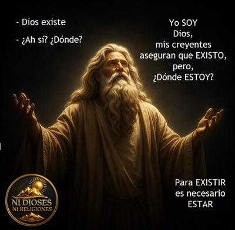

Se ha mencionado abundantemente cómo las supuestas propiedades atribuidas a «Dios» —omnipotencia, omnisciencia y omnibenevolencia— terminan chocando entre sí, contradiciéndose, generando paradojas. Sin embargo, los absurdos respecto a «Dios» no terminan allí: también hay incoherencias cuando abordamos directamente el tema de su existencia.


Porque «existir» en su sentido pleno, significa tener realidad efectiva (no ser mera ficción, no ser sólo una idea). Y hay otras dos palabras que se utilizan en el lenguaje práctico como si fueran sinónimos: «ser» y «estar». Pero cuando se aplican a «Dios», estas tres palabras se convierten en otra trampa conceptual que revela profundas incoherencias dentro del pensamiento teísta.
A ver, filosofemos un poco: «Existir» significa ser real y verdadero[1]. Mientras que «Ser» alude a la identidad o a las propiedades de algo o alguien (qué es algo o quién es alguien). «Ser» es un verbo copulativo, que afirma del sujeto lo que significa el atributo[2]. Mientras que «estar», implica situación o estado (estar dónde, o estar cómo). «Estar» es «hallarse en este o aquel lugar, situación, condición o modo actual de ser»… «Permanecer o hallarse con cierta estabilidad en un lugar, situación, condición[3].
Y aparece aquí la primera grieta: porque «Existir» es esencialmente «haber, estar, hallarse»[1]. Y no se puede existir sin estar… sin estar en algún lugar, de alguna manera. Porque «Estar» es un verbo copulativo usado «para expresar un determinado estado del sujeto», de un sujeto que existe[3]. Por tanto, si «Dios» EXISTE, necesariamente también ESTÁ… pero ¿dónde?, ¿cómo? —y esto es lo que deja al creyente sin una respuesta tan contundente como cuando afirma que su «Dios» existe. Porque decir solamente que algo o alguien «existe», sin decir «dónde» y/o «cómo» existe, deja la idea inacabada.
Aunque también suele considerarse cierto tipo de «existencia» que no requiere «estar» en algún lugar físico durante determinado tiempo, pero sólo cuando hablamos de entidades conceptuales, como un personaje de ficción (del que puede decirse, por ejemplo, que «es» valiente, o alto, y que «está» en un país real o imaginario); pero son entidades que no «existen» fuera de la mente o del lenguaje. ¿Será que «Dios» pertenece a esta categoría? Desde esta perspectiva, decir que «Dios es omnipotente, eterno o perfecto», no demuestra su existencia; sólo describe un concepto. Porque «Dios», como idea, puede en este sentido «ser sin existir» y «estar sin existir», igual que cualquier entidad imaginaria. ¿Será entonces que «Dios» existe, pero sólo como concepto?
Por tanto, si alguien afirma que «Dios existe», es legítimo preguntarle: «¿Dónde?» —Y es aquí donde entra la clásica doctrina del cristianismo: «Dios está en todas partes». Un dogma fundamental basado en el Salmo 139:7-12, que lo expresa con fuerza poética: «¿Y a dónde huiré de tu presencia? Si subiere a los cielos, allí estás tú; y si en el Seol hiciere mi estrado, he aquí, allí tú estás…» Es decir, no hay lugar donde «Dios» no esté. Lo que la teología interpreta como otra propiedad divina: la omnipresencia. Porque, según razonan, «Dios» no puede estar limitado por el espacio ni por el tiempo.
Sin embargo, surge aquí otro problema, porque aunque según el enfoque platónico (realismo de las ideas), hay entes (como los números) que existen de forma abstracta, y según el enfoque metafísico/teológico existen «entes trascendentes», como los espíritus (sin molestarse en demostrarlo), conforme al enfoque científico, «existir» se define como algo que tiene masa, energía o que puede interactuar con las fuerzas fundamentales. Por tanto, para la ciencia, «existir» requiere «estar en algún lugar en algún momento». Y entonces, algo que está fuera del tiempo y del espacio —como se menciona que ocurre con «Dios»— simplemente no existe. Porque en el mismo orden de ideas, existir implica «estar», y «estar» implica localización, lo cual implica condiciones de espacio y tiempo.
De esta forma, cuando un creyente dice: «Dios no está limitado por el espacio, pero está en todas partes», está sosteniendo dos ideas irreconciliables: porque si «Dios» está, está en alguna parte determinada en relación con el espacio-tiempo. Y si literalmente está en todas partes, significa que está distribuido como una sustancia en todo el espacio (lo cual implica materialidad).
Para evadir esta incongruencia, la teología hace un juego de palabras: «Dios está en todo, pero no es nada de lo que está». Una postura que se conoce como «panenteísmo», diferenciándose del panteísmo, en el cual «Dios» y el universo son lo mismo. Sin embargo, aparece otra paradoja: ¿Qué significa estar «en todas partes»? Si significa literalmente «en todo lugar», entonces viene siendo una forma de panteísmo; pero si significa que no es localizable en un sitio específico, porque está en todas partes sin estar en un lugar determinado, entonces «estar» pierde sentido.
Ahora bien, también puede decirse que no todo lo que «está» es material: una emoción «está» en tu experiencia, un pensamiento «está» en tu mente; pero en todos los casos, hay algún tipo de soporte o marco de referencia, porque algo está en el mundo físico o está en la mente. Aunque siempre es más preciso decir que algo «está», sólo cuando se manifiesta en el mundo físico.
No obstante, hay también una consecuencia moral incómoda en eso de estar «en todas partes», porque si tomamos en serio la omnipresencia divina, «Dios» estaría tanto en un hospital como en una cámara de tortura; tanto en un acto de amor, como en un crimen brutal. Estaría incluso hasta en lo más asqueroso, aborrecible y abominable. Y no como espectador distante, sino plenamente presente. Y entonces surgen preguntas inevitables: ¿Está presente sin intervenir? ¿Está implicado? ¿Está indiferente? Es decir, la omnipresencia, lejos de ennoblecer la ya de por sí retorcida idea de «Dios», la expone a dilemas morales difíciles de esquivar.
¿Significa entonces que, si «Dios» no está en el mundo físico, está sólo en la mente?
Bueno, al aplicar con rigor «ser», «estar» y «existir», «Dios» enfrenta tres opciones:
«Es», pero sólo como concepto (coherente o incoherente), pero sin que eso implique existencia real.
«Existe», pero no está en algún lugar en ningún sentido claro, lo cual es conceptualmente vacío.
«Está» en todas partes, y en ese caso, o se vuelve material/panteísta, o la palabra «estar» pierde significado.
La omnipresencia intenta elevar a «Dios» por encima de todas las limitaciones, pero al hacerlo, termina desdibujando las condiciones mínimas que hacen que algo exista. Y entonces, la pregunta final no es teológica, sino filosófica: ¿Tiene sentido afirmar la existencia de algo que no puede ubicarse, ni describirse sin contradicciones, ni distinguirse claramente de sólo una idea?
Cuando «ser», «estar» y «existir» dejan de encajar, lo que se resquebraja no es el lenguaje… sino el concepto mismo.
[Godless Freeman]
Comentarios
Comments powered by Disqus